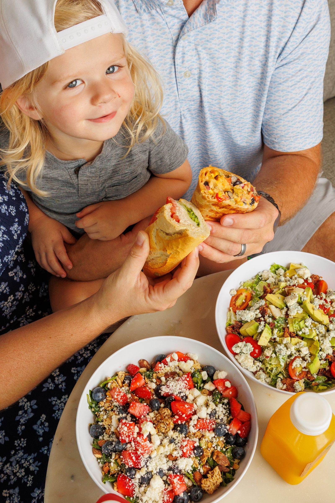
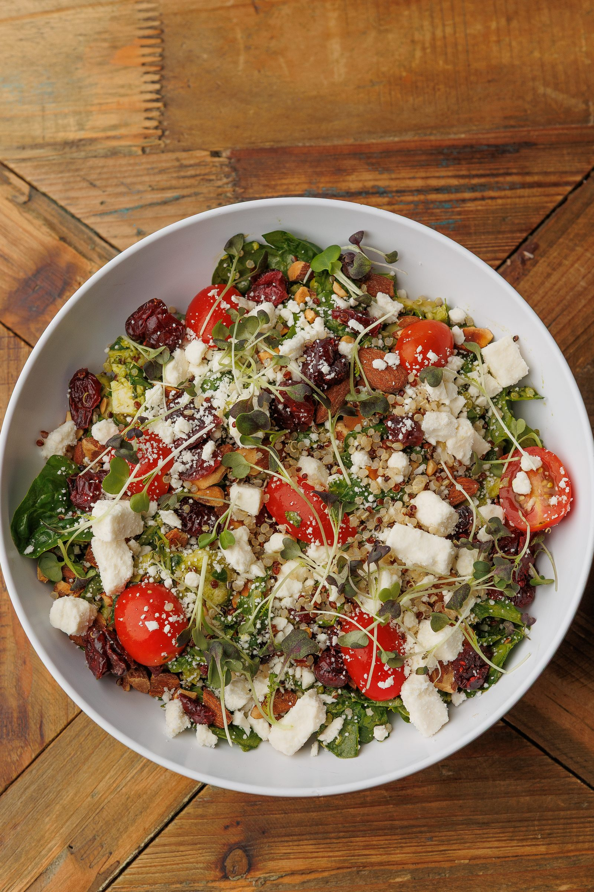
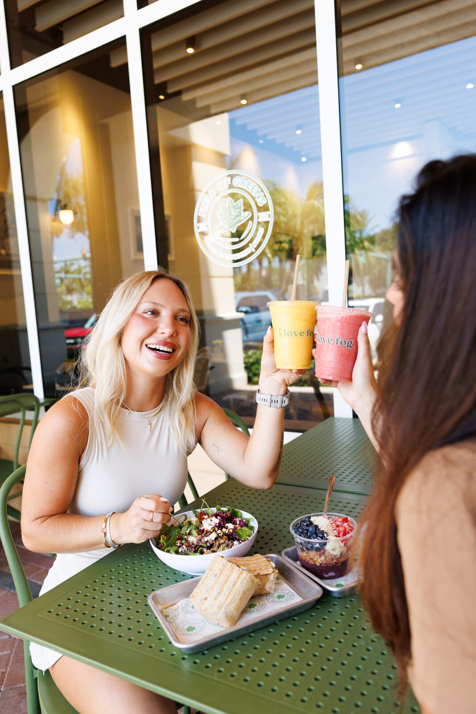

Brand Guidelines
Brand Guidelines
Where greens come true.
The Field of Greens brand system — marks, color, typography and photography. West Palm Beach, since 2003.
Brand Guidelines
The Field of Greens brand system — marks, color, typography and photography. West Palm Beach, since 2003.
The seal is the brand. It appears in kelly green on cream and white surfaces, and reversed in white over green or photography. The wordmark carries horizontal applications; the mantra is the brand's voice made visible.
 Primary · kelly on paperReversed · white on deep green
Primary · kelly on paperReversed · white on deep green Wordmark · horizontal lockups
Wordmark · horizontal lockups Voice mark · the mantra
Voice mark · the mantraWarm paper surfaces do the hosting; kelly green arrives as the accent — never the wallpaper. Deep green is the brand's formal register, and ink does the everyday talking.
The proportions in practice — green does not need to be the background to own the page.
Three voices, strictly cast: a warm serif for display, a clean sans for reading, and a monospace reserved for hard data. Every display headline carries one italic phrase — the brand's wink.
Medium for headlines, semibold for item and card titles. Italic carries the emphasis phrase — one per headline, always.
Paragraphs, addresses, interface copy, buttons. Semibold caps with 8% tracking is the button and navigation register.
Everything here is made from scratch, every morning — the same promise we've kept since 2003. Grab a table on the patio, or order ahead and take it to go.
Labels, prices, badges and kickers only. Contact details and editorial asides belong to the other two voices.
The Menu · Breakfast & Lunch, All Day
$14 · GF · V · CUP $5 · BOWL $6
EST. 2003 · WEST PALM BEACH, FL
The chalkboard hand. Scoped to menu section headings on the dark board — nowhere else.
The brand photographs what is actually true: scratch cooking on wood and steel, hospitality handed across the counter, and the particular brightness of a Palm Beach morning.
Overhead and three-quarter angles on wood tables and branded trays. Color comes from the ingredients — the photography never filters toward a palette.
The handoff, the shared table, the first bite. Guests and staff photographed mid-moment, never posed stiff.
Hard sun, deep sky, palms and painted facades. Exteriors shot looking up; interiors bright, white and green.








These guidelines govern every expression of the Field of Greens brand: the website, the stores, the deck, and whatever comes next. When in doubt, choose the quieter option — the brand earns attention by being certain, not loud.